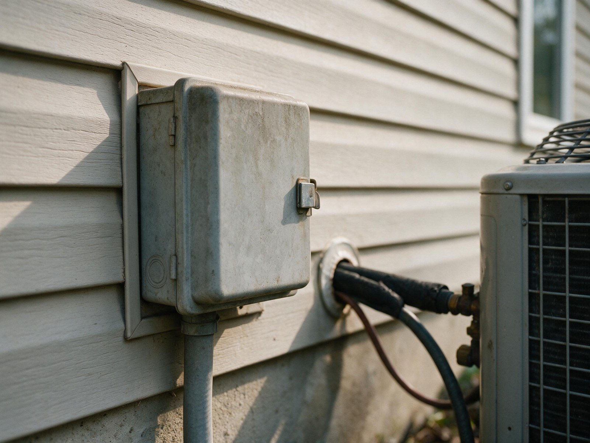

By the Editorial Team | Published: August 2026 | Last Updated: August 2026
The Traditional Compressor Design That Still Ships in Volume
Single-stage residential air-conditioning compressors are the design that dominated the U.S. market for decades and still ship in large numbers today. The compressor has one operating speed and produces one level of cooling capacity, corresponding to the equipment's nameplate rating. The thermostat controls delivered cooling by turning the compressor on and off; the compressor itself does not modulate. Understanding what this design actually does mechanically, and why it fits some conditions well and other conditions poorly, is the foundation for making sense of the two-stage and variable-speed alternatives.
The mechanical simplicity is real. Fewer components, fewer electronics, a smaller controls package, and the widest technician familiarity in the residential HVAC service ecosystem. The trade-offs are equally real, and they show up in cycling patterns, humidity control, and indoor sound level, especially outside the design conditions the compressor is best suited for.
How the Fixed-Speed Compressor Actually Works
Most residential single-stage compressors are either reciprocating (piston-based) or scroll (orbiting spiral) designs. In both cases the compressor is driven directly by an electric motor at a fixed speed determined by the electrical line frequency, typically 3450 RPM on 60 Hz single-phase power. Refrigerant mass flow rate is fixed by the compressor's displacement per revolution multiplied by the RPM, and refrigerant mass flow rate determines cooling capacity. There is no mechanism to change any of these on the fly.
The compressor's contactor closes when the thermostat asks for cooling and opens when the thermostat is satisfied. Startup draws a large inrush current (typically 5 to 7 times running current for the first half-second) as the motor overcomes rotor inertia. Steady-state operation follows, then shutdown. This cycle repeats through the cooling season, and the cycle count per season is one of the primary drivers of compressor service life.

Component Ecosystem That Matches Fixed-Speed Operation
- Indoor blower runs at a fixed speed (or, on newer units, high and low based on cooling call).
- Thermostat operates on standard 24-volt on-off logic; any generic thermostat works.
- Refrigerant metering uses a fixed-orifice or thermostatic expansion valve sized for the compressor's fixed capacity.
- Coil match is straightforward because the operating conditions are narrow.
Where Single-Stage Systems Fit Well
The equipment class fits several distinct scenarios, and the fit is not accidental. Dry climates where sensible load dominates and latent load is a small fraction of total cooling load favor single-stage because the humidity control gap is small. Small homes where cooling load is modest (under about 2 tons) do not benefit much from modulation because there is not enough part-load range to exploit. Cost-sensitive installations where first cost dominates the decision, including rental properties and starter homes, get most of the value out of single-stage.
The equipment also fits regions with limited service technician exposure to inverter-driven or communicating equipment, because a broken single-stage system is easy to diagnose with a manifold gauge set and a multimeter. Rural and small-market service ecosystems often carry more single-stage parts and expertise than they carry variable-speed equivalents.
Where Single-Stage Falls Short
The equipment class produces predictable problems in hot-humid climates, in larger homes, in high-performance homes with low sensible loads, and in any application where humidity control matters. The mechanism is the same in each case: on mild days, the fixed-speed compressor satisfies the thermostat quickly, shuts off, and does not run long enough to remove moisture from the return air. Indoor humidity drifts up during the shoulder seasons and stays elevated through evening hours when temperature is comfortable but latent load persists.
The cycling pattern also produces measurable comfort deficits. Room-to-room temperature spread widens because short cycles do not last long enough to distribute conditioned air evenly through the duct system. Startup sound (compressor and blower ramping up together) recurs frequently on mild days. Compressor service life is shorter under high cycling counts (manufacturers estimate 15 to 30 percent reduction under repeated short-cycling versus longer cycles at the same nameplate capacity).
Symptoms Occupants Notice First
- Indoor humidity above 55 percent during the cooling season, even when the thermostat reads target.
- The system is either running or off, no in-between; the transition is audible.
- Second-floor or far-room temperatures lag first-floor or thermostat-adjacent rooms.
- Utility bill runs higher than expected relative to the equipment's SEER2 rating suggests.
Efficiency Ratings and What They Actually Mean
| SEER2 rating | Class within single-stage tier | Notes |
|---|---|---|
| 13.4 to 14 | Entry-level, DOE minimum baseline | Meets 2023 federal minimum for southern regions; smallest first cost |
| 14 to 15 | Mid-tier single-stage | Better coil match, slightly larger heat exchanger |
| 15 to 16 | High-efficiency single-stage | Approaches two-stage territory on nameplate; still cycles like single-stage |
Above SEER2 15 the class boundary starts to blur; equipment ratings depend on coil match and airflow rather than the compressor alone. The rating is a laboratory measurement at fixed conditions and does not capture the seasonal energy penalty of frequent cycling on mild days.

Frequently Asked Questions
Is single-stage equipment being phased out by regulation?
Single-stage equipment is not being phased out. The 2023 DOE minimum efficiency standards raised the SEER2 floor across regions but did not restrict compressor class. Single-stage equipment continues to ship at all efficiency tiers above the federal minimum, and it dominates the low end of the residential market. Regulatory pressure is on total-system efficiency rather than compressor class specifically.
Can a single-stage system be paired with a variable-speed indoor blower?
Yes, and the combination is common on mid-tier single-stage equipment. A variable-speed (ECM) indoor blower can slow airflow during dehumidification calls and improve latent capacity slightly, but it cannot fix the underlying fact that the outdoor compressor still runs at 100 percent or off. The combination is worth doing on humid-climate installations that must stay single-stage for budget reasons, but it does not close the humidity-control gap to two-stage.
Why is single-stage still the default in some markets?
Regional preference for single-stage comes from installer familiarity, parts availability, and lower first cost. Markets where cooling season is short (northern states), where sensible load dominates (dry western climates), or where price sensitivity is high all show higher single-stage share. These preferences are stable rather than declining; they reflect real fit rather than lag.
Does a single-stage compressor last as long as a variable-speed compressor?
Under matched duty cycles, no. Variable-speed compressors experience fewer startup events and gentler mechanical loading, which extends service life. Manufacturers publish expected life of 12 to 15 years for single-stage and 15 to 20 years for variable-speed under typical residential use. Real-world service life depends more on installation quality, refrigerant charge accuracy, and maintenance than on compressor class, but the ranking holds across large fleets.
What size single-stage system is appropriate for a small home?
Small homes with modest cooling loads (under about 24,000 Btu per hour, or 2 tons) are the equipment class's best fit. Below 2 tons, the part-load penalty of single-stage is small because the modulation range that variable-speed offers has less to work with. Above 3 tons, humidity-control concerns become more pronounced and two-stage or variable-speed alternatives become more compelling.
How does single-stage equipment perform in hot-humid climates specifically?
Poorly, unless deliberately paired with a whole-house dehumidifier. In IECC Climate Zones 1A and 2A the latent load fraction is high enough that single-stage cycling leaves indoor humidity persistently above the comfort band. The remedy in existing installations is usually a supplemental dehumidifier (90 to 130 pint per day range) at $2,500 to $4,500 installed. The cheaper remedy at replacement time is stepping up to two-stage or variable-speed equipment.
Are two-speed indoor blowers on single-stage systems really different from two-stage systems?
Yes, meaningfully different. A two-speed blower changes airflow but the compressor still runs at one capacity, which means capacity modulation is still off or on. A true two-stage system modulates the compressor itself (typically to 65 percent low stage), which changes refrigerant mass flow and delivered capacity. The compressor modulation is where the humidity and cycling benefits come from, not the blower modulation alone.
Is there any case where single-stage is preferable to two-stage on the same budget?
In very small homes (under 1.5 tons) where the second stage would rarely engage, and in cooling-light climates where the annual runtime is too low to recover the second-stage premium in either efficiency or comfort, single-stage remains a defensible choice. On most other budgets that reach two-stage, two-stage is the better pick for the marginal cost.
